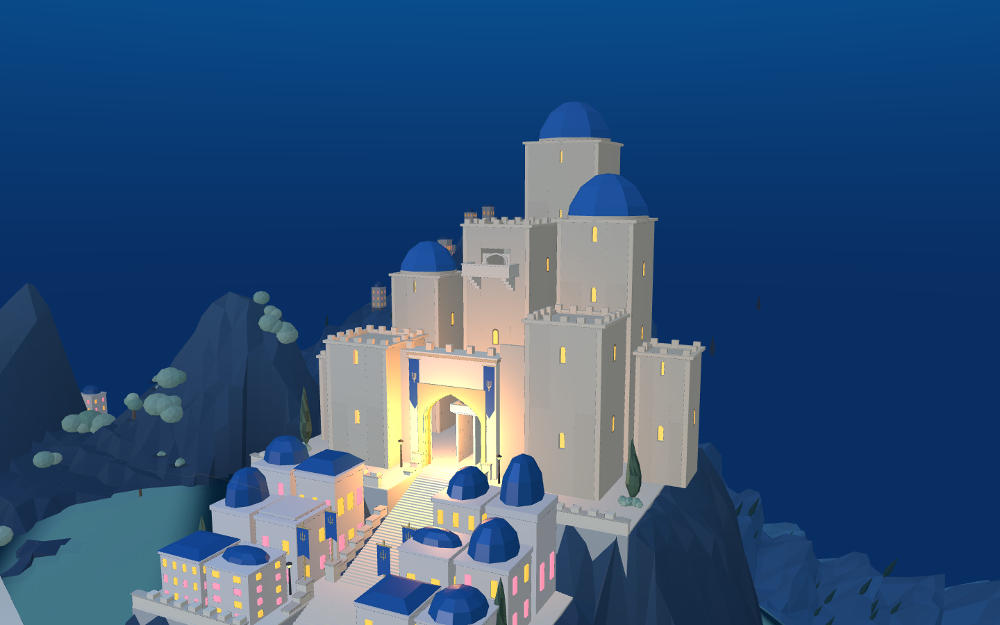
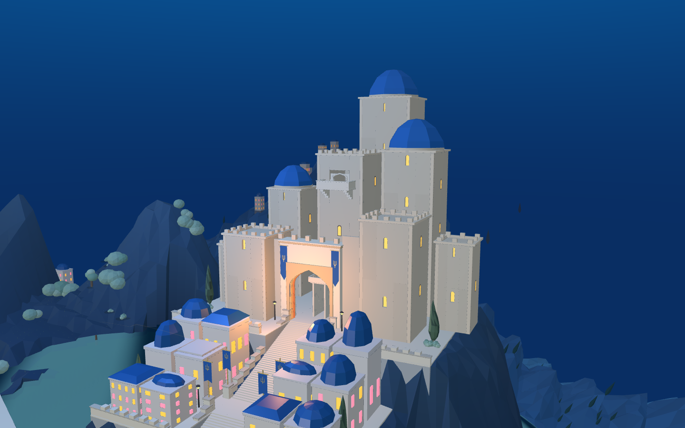
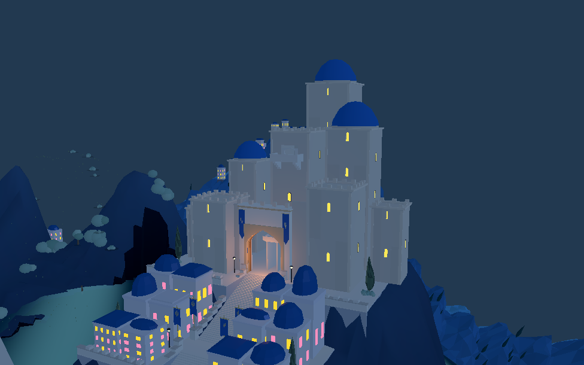
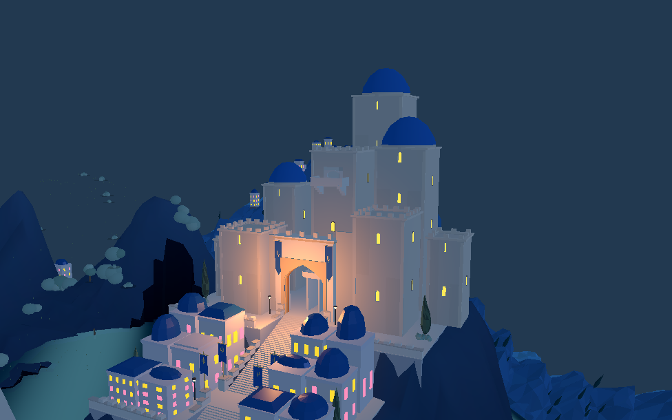

当前改动已进入 8931 原游戏，Godot 使用同步的灯位与色彩配置。以下均为实际运行截图。




主门固定区域 33,000 像素中，接近白色的暖色像素从 1,757 降至 11。这只是局部过亮指标，不是整体画质或目标匹配评分。灯光仍为新城三盏，旧城四盏原灯独立保留。昼→夜→昼材质恢复检查通过。
主堡体量、临水山坡、完整两城构图仍待继续对照目标图收敛；本批没有修改地形、船只路线或战斗。
当前配置与场景记录 · 局部亮度记录 · Godot 昼夜恢复验证